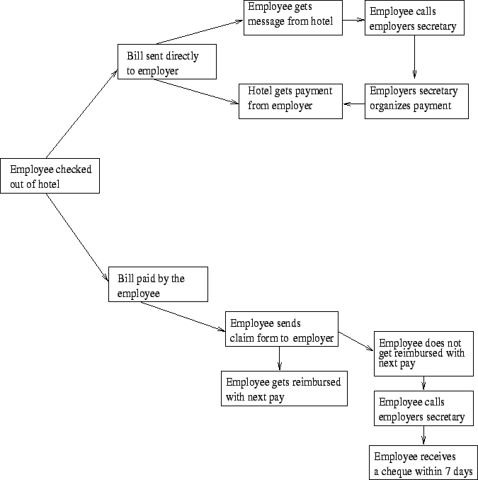

Next: Decision Table
Up: Codification Tools/Procedures
Previous: Codification Tools/Procedures
Contents
- Knowledge maps originated from the belief that people act on things
that they understand and accept.
- It indicates that self-determined change is sustainable.
- Knowledge map is a visual representation
of knowledge.
- They can represent explicit/tacit, formal/informal,
documented/undocumented, internal/external knowledge.
- It is not a knowledge repository.
- It is a sort of directory that points towards people, documents, and
repositories.
- It may identify strengths to exploit and missing knowledge gaps to
fill.
- Knowledge Mapping is very useful when it is required to
visualize and explore complex systems.
- Examples of complex systems are ecosystems, the internet,
telecommunications systems, and customer-supplier chains in the stock
market.
- Knowledge Mapping is a multi-step process.
- Key can be extracted from database or literature and placed in tabular
form as lists of facts.
- These tabled relationships can then be connected in networks to form
the required knowledge maps.
Figure 6.1:
Example: Knowledge Map
|

|
A popular knowledge map used in human resources
is a skills planner in which employees are matched to jobs.
Steps to build
the
map:
- A structure of the knowledge requirements should be developed.
- Knowledge required of specific jobs must be defined.
- You should rate employee performance by knowledge competency.
- You should link the knowledge map to some training program for career
development and job advancement.
Next: Decision Table
Up: Codification Tools/Procedures
Previous: Codification Tools/Procedures
Contents
Knowledge Management Systems
2004-11-01